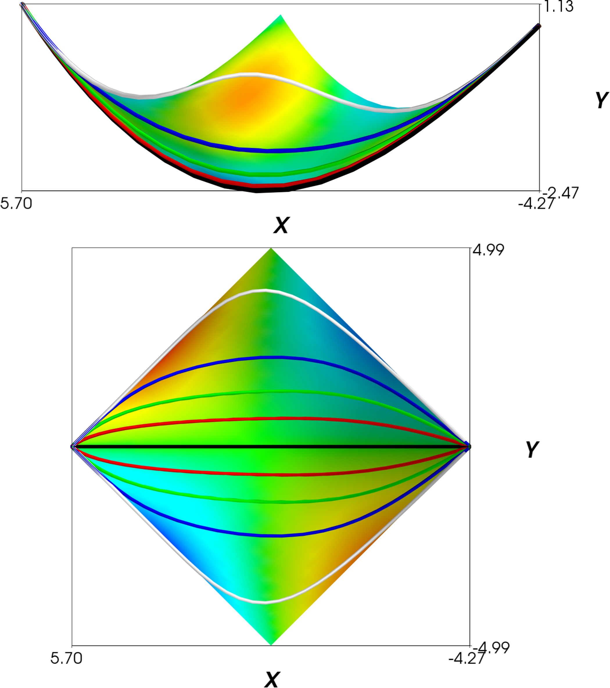
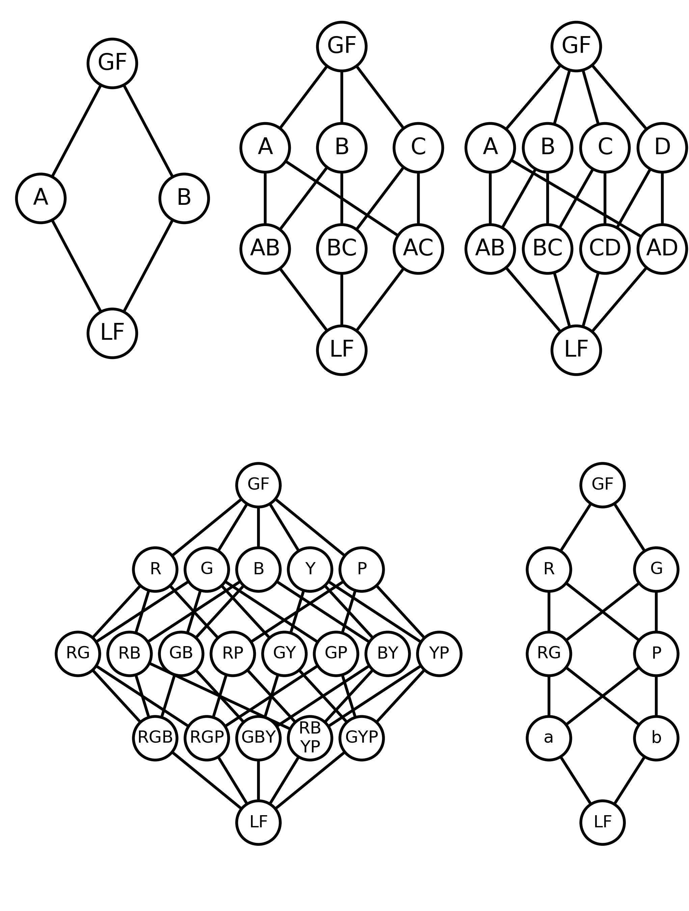

Information Topology
What is a manifold?
- A manifold is a kind of topological space.
- No sense of distance or angles
- Manifold vs. Manifold with boundary vs. Manifold with corner and different topological spaces
- Adding a metric to the manifold induces a topology, but adds additional structure (distance).
- MBAM does not operate on the geometric object.
- MBAM uses the geometry, to find a topological feature: the boundary.
To Illustrate
Consider the question:
What is the FIM for the enzyme-substrate model? \begin{align} \frac{d}{dt} [E] & = -k_f [E][S] + k_r [C] + k_c [C] \\ \frac{d}{dt} [S] & = -k_f [E][S] + k_r [C] \\ \frac{d}{dt} [C] & = k_f [E][S] - k_r [C] - k_c [C] \\ \frac{d}{dt} [P] & = k_c [C] \end{align} This question makes no sense.
What is the FIM for the enzyme-substrate model? \begin{align} \frac{d}{dt} [E] & = -k_f [E][S] + k_r [C] + k_c [C] \\ \frac{d}{dt} [S] & = -k_f [E][S] + k_r [C] \\ \frac{d}{dt} [C] & = k_f [E][S] - k_r [C] - k_c [C] \\ \frac{d}{dt} [P] & = k_c [C] \end{align} This question makes no sense.
On the other hand
What are the boundaries of the enzyme-substrate model?:
\begin{align}
\frac{d}{dt} [E] & = -k_f [E][S] + k_r [C] + k_c [C] \\
\frac{d}{dt} [S] & = -k_f [E][S] + k_r [C] \\
\frac{d}{dt} [C] & = k_f [E][S] - k_r [C] - k_c [C] \\
\frac{d}{dt} [P] & = k_c [C]
\end{align}
This question is well-posed.
The equilibrium approximation (Michaelis-Menten reaction) is one of the boundaries of this model.
The equilibrium approximation (Michaelis-Menten reaction) is one of the boundaries of this model.
Modeling
- $\Theta$: Parameter Space
- $Y$: Model mapping
- $\mathcal{B}$: Behavior Space
- All possible behaviors/measurements (large)
- Induced by the mapping from parameter space $Y$.
- $X$: A real experiment
- $\mathcal{D}$: Data space induced by $X$.
- $y$: The model mapping from parameter space to data space.
- What we have studied so far.
- $y^{-1}$: Parameter Inference from experimental data.
Transtrum, Mark K., Gus Hart, and Peng Qiu. "Information topology identifies emergent model classes." arXiv preprint arXiv:1409.6203 (2014).
Statistical vs. Abstract Models
- Parameter space and potential behaviors exist independently of real experiments.
- No natural metric.
- Manifold in the topological sense.
- Statistical inference on real data adds a metric to the manifold.
- Natural Metric
- Manifold in the geometric sense.
- Statistical Model: a model for which the Fisher Information is defined.
- Requires data/predictions
- Information Geometry
- Abstract Model: A parameter space and model mapping for which potential Fisher Informations could be defined.
- Information Topology
Example:
\begin{align}
y_1 & = e^{-\theta_1 t} + e^{-\theta_2 t} \\
y_2 & = e^{-\theta_1 t} - e^{-\theta_2 t}
\end{align}
- Different measurements of $y_1$ and $y_2$ can lead to different geometries (e.g., curvatures).
- In either case, the boundary complex is the same (i.e., square like)
- The "square-likeness" is a property of the abstract model.
- We say the manifold is a "topological square"
Topology
Information Topology: Study of the boundary complex of the abstract model compared to the boundary structure of the statistical model induced by the Fisher Information Matrix.
- Non-standard (Not counting "holes" in the manifold, although that could be done.)
- This analysis is topological in several ways:
- Global (not local)
- Invariance to classes of transformations (diffeomorphisms rather than homeomorphisms)
- Studies properties of a topological space (in most cases, abstract models are CW complexes)
- Related to the origin of topology (Euler's polyhedra formula)
- Is independent of the Fisher Information Matrix.
Manifold Collapse
- The Fisher Information Metric induces a topology on the parameter space.
- This topology need not be the same as that of the abstract model.
- When the FIM topology is different from the abstract topology, we say there was Manifold Collapse.
Example:
\begin{align}
y_1 & = e^{-\theta_1 t} + e^{-\theta_2 t} \\
y_2 & = e^{-\theta_1 t} - e^{-\theta_2 t}
\end{align}

- But suppose I only observe $y_1$.
- The manifold is "folded" in half.
- It is now "triangle-like".
- The collapse reflects a qualitative change in the information content of the data and results in a structural nonidentifiability.
Collapse of the Boundaries
- Sometimes the boundary structure changes without a structural nonidentifiability.
- The abstract enzyme-substrate model is three dimensional with five faces.
- The statistical enzyme-substrate model when observing only the product $[P]$ is three dimensional with two faces.
- The boundary collapse leads to a practical nonidentifiability.
- The success of the Michaelis-Menten approximation is a consequence of this boundary collapse.


Hasse Diagrams
- The hierarchy of boundaries forms a graded partially ordered set (poset)
- Posets are graphically represented by Hasse diagrams.
- Nodes represent boundary structures.
- Rows indicate dimension.
- Arrows indicate adjacency relationships.
- It is customary to include a single "Least Face" (LF) corresponding to dimension -1.
Examples

Hasse Diagrams for:
- Line Segment
- Triangle
- Square
- Abstract enzyme-substrate model
- Statistical enzyme-substrate model
Meaning of Nodes
Nodes in the Hasse diagram:
- Simplified Models
- Approximate a portion of the abstract model.
- Distinct Behavioral regimes
The Hasse diagram is a road map from the intricate and fully parameterized description of a complex system through various types of approximations to the set of distinct behavior regimes the model enables.
Manifold Collapse Revisited
- A statistical manifold has a topology (boundary complex) induced by the metric.
- This boundary complex may or may not be the same as that of the abstract model.
- Families of statistical models with the same boundary complex are related by diffeomorphisms.
- Result of differential topology: Diffeomorphisms form a group.
- Groups of statistical models with the same Hasse diagram.
Observation Semi-group
- When the manifold "collapses" information is lost--the operation has no inverse.
- The group structure relating statistical manifolds is broken.
- The collection of all possible statistical manifolds forms a semi-group. (Like a group, but with no inverse.)
- Within the semi-group are proper subgroups of statistical manifolds characterized by their common Hasse diagram.
- There is a partial ordering of these subgroups. Let $G_1$ and $G_2$ are two sub-groups. If there exist statistical manifolds $\mathcal{M}_1 \in G_1$ and $\mathcal{M}_2 \in G_2$ such that the observations for $\mathcal{M}_1 \subset \mathcal{M}_2$ then $G_1 \prec G_2$
The Observation Semi-Group
Very little is known about the observation semi-group and the relationship among its subgroups.
- There exists a maximal subgroup $G_{max}$
- It's Hasse diagram is that of the abstract model.
- We speculate that parameter nonidentifiability (both structural and practical) can be defined in terms of the observation subgroups.
Abstract Model Manifold
Many statistical manifolds have a common structure:
What is the structure of a typical abstract model manifold?
- A few long directions
- Many narrow directions
- Hyper-ribbon, low effective dimensionality
- Universality, effective theories, sloppiness
What is the structure of a typical abstract model manifold?
Abstract Model Manifold
For a complex system, the Hasse diagram of the abstract manifold is combinatorially complex:
Example: Multiple Exponentials
Example: Cluster Expansion

Example: Exponential Families
Probability distribution for a discrete set of outcomes:
$$ P_i = \frac{1}{Z} e^{-\sum_\mu \Pi_{i\mu} \theta^\mu} $$
Completely characterized by the $\Pi$ matrix.
$\Pi$ is an $M$x$N$ matrix
Examples:
$\Pi$ is an $M$x$N$ matrix
- $M$ outcomes
- $N$ parameters
Examples:
- Ising Model
- Markov Random Field
- Cluster Expansion (alloys crystal structure)
Topology of Exponential Families
- Each row of $\Pi$ corresponds to a particular outcome (e.g., crystal structure)
- Each row of $\Pi$ is a vector in parameter space.
- Plot the rows of $\Pi$ as points in parameter space.
- The convex hull of these points has the same boundary structure as the abstract model.
Transtrum, Mark K. "Manifold boundaries give" gray-box" approximations of complex models." arXiv preprint arXiv:1605.08705 (2016).
Reduced Models of Exponential Families
The boundary models of the exponential families:
For the case of cluster expansion and crystal structures:
- Several outcomes have zero probability.
- Fewer parameters to describe the relative probabilities among these reduced set of outcomes.
For the case of cluster expansion and crystal structures:
- Zero parameter boundaries have one outcome: the ground state, i.e., stable crystal structure.
- One parameter boundaries describe the control parameter for the phase transition between the two ground states.
Example: Binary Alloy on 2D 4x4 unit cell
- Complete information about the phase diagram of this model.
- Which simple models are appropriate for which regimes.
Final Thoughts About Modeling Complex Systems
- There is no theory of complex systems.
- What would a theory look like? A theory of using models to confidently make predictions about any scientific question.
- What model to use?
- Where is the model valid?
- Akin to universality classes, RG.
Lessons from Information Topology
- Hasse diagrams are exponentially complex
- Physical systems can exhibit a combinatorially large number of behaviors.
- Most real observations only probe a small set of these behaviors.
- Manifold collapse leads to good approximate models for these limited behaviors.
- Reduced models are only valid for a limited range of behaviors.
- The Abstract Model Hasse Diagram relates the intricate description of a complex system through various types of approximations to the set of distinct behavior regimes the model enables.
- The Observation Semi-Group relates how different types of coarse-graining lead to systematic compression of the underlying parameter space.